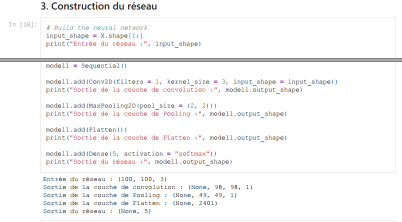

Crédit : Arno Smit sur Unsplash
Vers un réseau profond pour la classification des feuilles d'arbres
Introduction
En novembre dernier, j'avais posté un article qui traitait des réseaux de convolution (essentiellement de la découverte à l'époque). Nous avions étudié un jeu de données restreint (240 images de feuilles d'arbres malades) et construit un modèle de classification (réseau de neurones) qui se reposait sur une couche de convolution. Les résultats n'étaient pas mauvais (presque 80% en validation), mais le réseau n'était pas robuste. En effet, l'augmentation des données (rotations, translations) n'était pas appliquée au moment de l'entraînement et les prédictions du réseau sur des données plus "exotiques" (par exemple, des images issues du jeu de validation auxquelles on a imposé une rotation) étaient mauvaises.
Peut-on obtenir d'aussi bon résultats que précédemment (80% en validation, au moins) avec des images plus réalistes ? C'est ce que nous allons essayer de faire aujourd'hui, en utilisant un réseau plus profond.
Situation
Nous disposons toujours d'environ 240 images de feuilles d'arbres malades (ce qui est peu pour entraîner un réseau profond !). On peut les représenter grâce à Python (nous utiliserons Jupyter Notebook) :
Les images s'affichent ainsi :
Les courbes typiques d'entraînement du modèle précédent (1 couche de convolution 2D à l'entrée, 1 couche de Pooling2D, 1 couche de Flatten pour repasser sur une partie dense et 2 couches Dense pour obtenir le vecteur de classification à 5 composantes) étaient de la forme (avec Data Augmentation appliquée !) :
On observe donc une précision sur le jeu d'entraînement de 55% environ (50% en validation) : ce n'est pas complétement à jeter étant donné le nombre de classes (5, donc un modèle aléatoire obtiendrait une précision moyenne de 20%) mais c'est normalement améliorable.
Vers un nouveau modèle
On va désormais appliquer une augmentation des données (instance de l'objet ImageDataGenerator disponible dans Keras) :
J'ai fait le choix de ne pas garder les translations d'images (image décalée horizontalement ou verticalement d'une certaine fraction) car les modes de remplissage des "trous" engendrés par la méthode ne me semblent pas pertinents (les pixels à la frontière sont répliqués en mode "nearest"). On obtiendrait des images qui sembleraient avoir "bavé" du côté opposé à la translation. En revanche, on pourrait certainement couper certaines images (car les feuilles sont toujours centrées sur les images) pour s'assurer que le réseau apprend bien des motifs présents sur les feuilles, et pas sur le fond (qui serait alors effacé par la transformation).
Seules les rotations sont gardées (pm. 180° : n'importe quel angle est désormais possible dans le jeu de données). Cette méthode présente le grand avantage d'être sans remplissage (car aucun pixel n'est supprimé !) et assure des tailles d'images constantes (nécessaire pour le réseau).
Le réseau précédent était :

Et nous utilisions la métrique "accuracy" (précision : taux de bonnes classifications) ainsi que la fonction de perte (pour la descente de gradient) "entropie croisée". Elle est définie comme suit :
L'illustration rappelle la nécéssité de joindre une activation softmax (strictement positive) à une telle fonction de perte. La descente de gradient (mise à jour des paramètres du modèle neuronal) se faisait en utilisant l'"optimizer" Adam (qui utilise les gradients passés pour la mise à jour). Sans entrer dans le détail, nous garderons cet "optimizer", ainsi que la même fonction de perte et la même métrique. Le modèle neuronal, en revanche, sera modifié.
On peut, pour savoir comment construire le nouveau réseau, étudier les features maps (résultats intermédiaires) de ce modèle :
Cette ligne définit un modèle intermédiaire composé des sorties des couches succesives du réseau initial : très pratique pour étudier le séquençage des opérations ! On accède aux résultats intermédiaires via cet objet. Les images arrivent dans le réseau codées sur 3 couleurs ("RGB channels") et de taille 100 par 100 (constante définie dans le programme). On regarde le résultat après la 1ère couche (convolution) :
Résultats pour chacune des classes après la 1ère couche de convolution. On repère bien les pixels plus clairs (attention, ils sont standardisés !) sur la classe virus. Les contours sont également bien identifiés mais ne sont pas très utiles, à part à la classification des "Fungi" (la maladie attaque le contour des feuilles). Les zones brunes des "Nematodes" sont bien visibles aussi. Le dégradé causé par les bactéries (classe 1, 1ère image) permettra aussi sans doute d'aider à la classification. On observe bien que le fond (uniforme) n'aide pas du tout au niveau de l'information (et c'est normal). La couche de convolution, bien que simple, apporte déjà beaucoup d'informations sur le traitement des données !
La couche suivant est une couche de Pooling, étudions sa sortie :
Peu d'effet ! Il faudrait ajouter plus de couches de convolution avant pour permettre au réseau de retirer des détails plus fins des images et ne pas mettre de couche de Pooling aussi tôt (plutôt après quelques couches de convolution).
Construction d'un modèle plus profond
On commence, comme d'habitude, par séparé le jeu de données (mélangé au préalable par la fonction numpy.shuffle(), possible ici car les données sont indépendantes) en lots pour l'entraînement et la validation. Note : pas de cross-validation ici, bien que cela devrait être mis en place dans une prochaine version. Etant donné le peu de données disponibles, on pourrait s'intéresser à des schémas de validation de type leave-one-out (validation tournante sur 1 seul individu).
Pour la construction du réseau (enfin !), on utilise l'analyse précédente : plusieurs couches de convolution permettront de tirer des motifs plus complexes des images. Encore une fois, notre principal problème ici est le manque de données, c'est pourquoi aller jusqu'à 3 couches successives de convolutions me paraît peu pertinent (trop de paramètres à entraîner !). Il ne faut pas surcharger le réseau.
Ainsi, on commence le réseau par 2 couches de convolution successives, suivies d'une couche de Pooling. Vient ensuite une couche de Dropout pour éviter l'overfitting et une couche de Flatten pour effectuer la transition vers la partie dense. On ferme le réseau par une couche Dense à 5 composantes et activation "softmax" : le vecteur de probabilité.
La couche de Dropout de paramètre 0.2 (20%) permet de mettre à 0 20% des poids (aléatoirement) entre la couche de Pooling et la couche de Flatten durant l'entraînement (seulement !).
C'est le moment de compiler et d'afficher le résumé du réseau :
La couche Dense finale est complétement connectée à celle précédente (couche Flatten, et indirectement avec les autres car pas de paramètres sur les couches précédentes), ce qui la rend très dense (d'où son nom) en paramètres. On peut d'ailleurs faire le compte nous-mêmes : avec 100 neurones sur la couche de Flatten et 5 sur la couche Dense finale, la matrice de transition contient 500 paramètres, à quoi nous ajoutons un vecteur de biais de taille 5, soit 505 paramètres en tout. Au final, nous obtenons un réseau très (trop) grand par rapport aux données disponibles, mais qui fonctionne bien empiriquement du fait de sa profondeur (surtout grâce aux deux couches de convolution liminaires) :
Quasiment 80% de précision sur des données augmentées en validation, c'est sans doute améliorable avec plus de données en entrée (et un travail plus approfondi sur le réseau, pour un prochain article). On peut faire le calcul du ratio paramètres à entraîner/données d'entraînement : 761/190 = 4 ! Une donnée d'entraînement doit fixer 4 paramètres (sans compter sur les époques, qui permettent de gommer ce problème). C'est un compte qui illustre bien la nécessité d'avoir une quantité de données avant de pouvoir construire des modèles profonds.